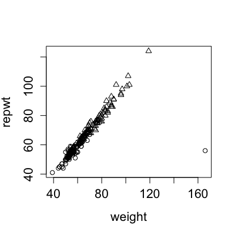
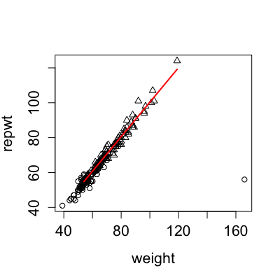
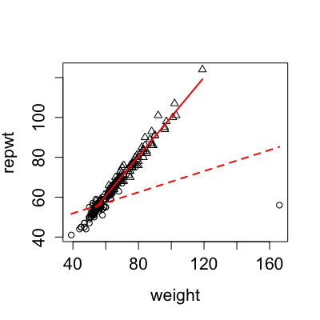

regLine(mod, col = palette()[2], lwd = 2, lty = 1, ...)
lm,
that responds to the coef function
by returning a 2-element vector, whose elements are
interpreted respectively as the
intercept and slope of a regresison line.palette
and par).2 (see par).1, a solid line (see par).lines plotting function.Plots a regression line on a scatterplot; the line is plotted between the minimum and maximum x-values.
In contrast to abline, this function plots only over
the range of the observed x-values. The x-values are extracted from
mod as the second column of the model matrix.
NULL. This function is used for its side effect: adding
a line to the plot.


